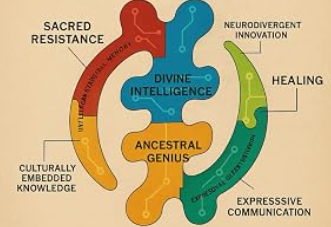
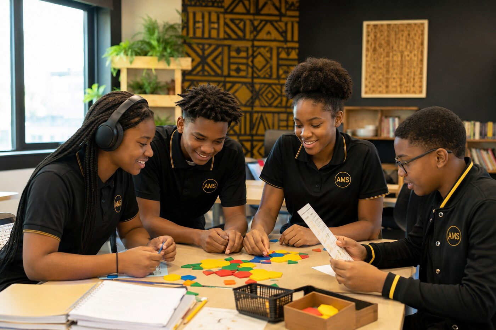
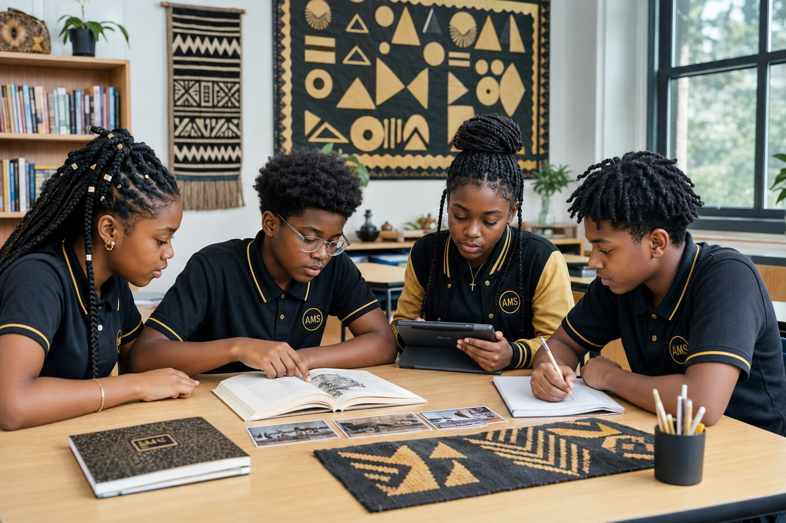
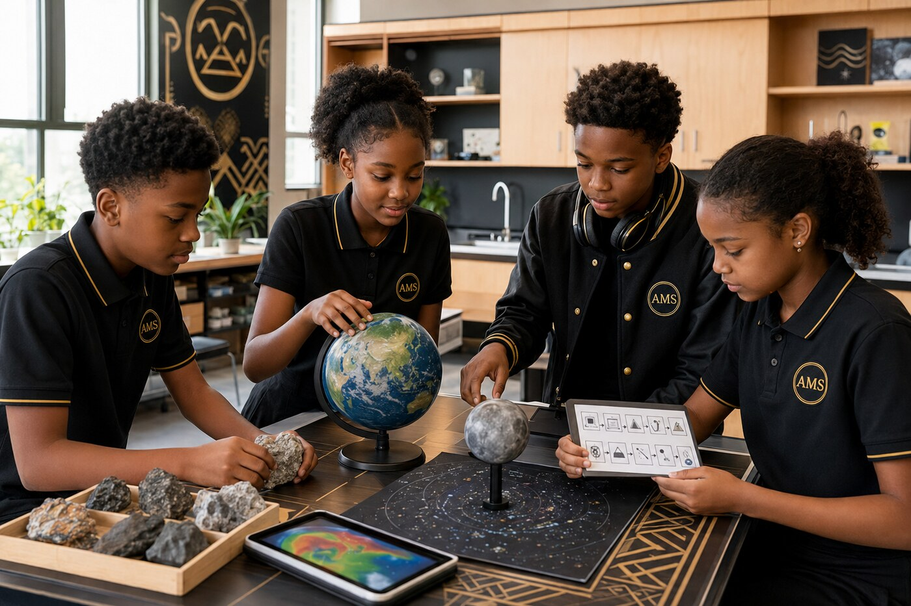
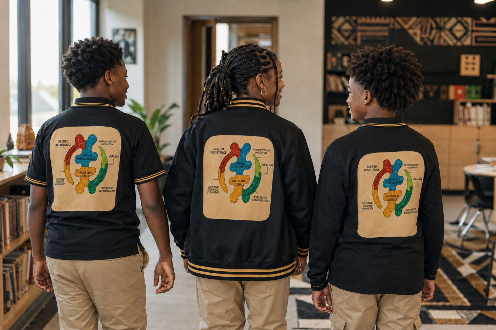
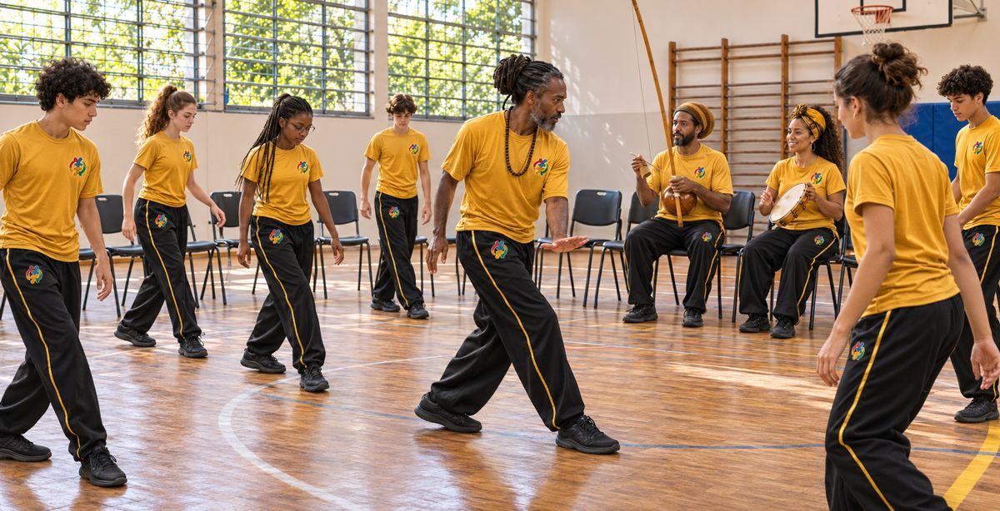
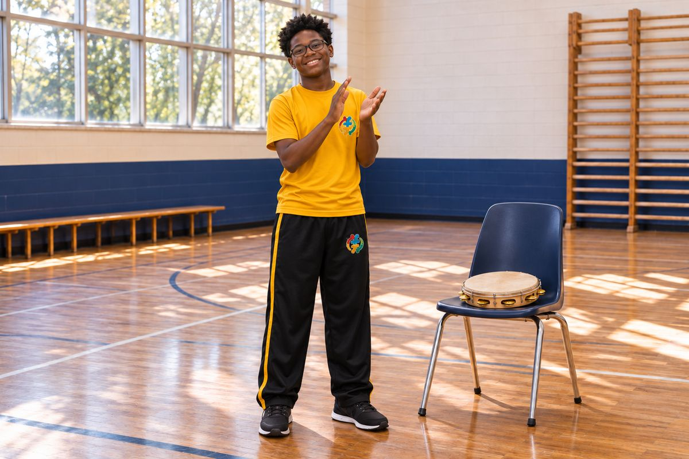

Interactive Planning Tools
Explore student-support planning, staffing estimates, and curriculum filters without submitting private information.
Open Interactive Tools
Rooted in Wisdom. Rising in Purpose.
Listen and Explore
Experience the developing vision through concept visualizations, educational music, and family planning tools.
Explore Akan-rooted learning, neurodivergent possibility, cultural memory, and a new educational dawn.




Concept visualization notice: Every person shown is fictional and is not a currently enrolled student.
Explore student-support planning, staffing estimates, and curriculum filters without submitting private information.
Open Interactive ToolsExplore educational AI music, books, future releases, and teacher-centered research.
Visit the AI Music Lab
AI-generated concept: fictional participants illustrate a proposed program, not an actual class or a confirmed instructor appearance.
Explore the program
Movement · Music · Community
Our Capoeira concept visuals illustrate the proposed program. AI-generated people are fictional; these images do not document enrolled students, actual classes, or an appearance by Mestre Curtis Pierre.
Our schoolwide approach is inspired by Mestre Curtis Pierre’s work in New Orleans, with attention to fluid movement, balance, flexibility, music, and cultural history.